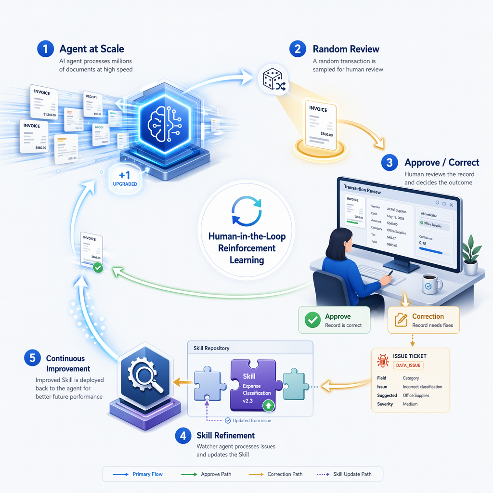

A closed feedback loop for document intake. An AI agent extracts structured data from uploaded documents at scale; a configurable sample plus rule-based flags route records to a human reviewer; and every rejection becomes an edit to the live agent skill — so the next run is measurably better than the last.

Document-extraction agents are never perfect. The usual answer is to have a human fix the output — which fixes one record but loses the lesson. This solution captures the lesson and feeds it back into the agent's skills, stored in Dataverse, so quality compounds over time.
Ten steps across four players — the app, M365 Copilot, the AI agent, and the human reviewer.
A user uploads one or more documents. The system assigns each a unique Document ID.
AppUsing M365 Copilot, the user initiates processing for a Doc ID and uploads the file to process. Temporary step until automation is introduced here.
M365 CopilotThe agent processes the document and extracts its contents into a JSON file, driven by the extraction Skills in the agent.
AI agentA random number is generated. If it matches the “pick” number set in Settings, the document is flagged for human review.
AppThe agent applies a set of business rules from a Skill stored in Dataverse. If any rule is “tripped,” that's another reason to flag for review.
AI agentThe reviewer confirms everything looks good and can make updates if something looks off — then chooses Accept or Reject with Comments.
ReviewerOn Reject with Comments, the reviewer is prompted to suggest how the business-rule skill should improve to address what needed fixing.
ReviewerCreating a skill update fires a workflow that triggers the skill-update agent to take that input and generate a concrete recommendation for the existing Business Skill.
Workflow → agentThe user reviews and approves the recommended change to the skill, updating the record's status accordingly.
ReviewerThe same workflow re-triggers the agent — this time to directly update the Business Skill in Dataverse. Subsequent runs pick up the improved skill.
Workflow → agentFrom upload through extraction, the two review triggers, human review, and the self-improving skill-update cycle that feeds back into every future run.
flowchart TD
subgraph INTAKE["1 · Document Intake"]
A[User uploads one or more documents] --> B[System assigns a unique Document ID to each]
end
subgraph TRIGGER["2 · Processing Kickoff via M365 Copilot"]
C["User initiates processing in M365 Copilot
(provides Doc ID + uploads the document)
temporary — automation planned"]
end
subgraph EXTRACT["3 · Extraction"]
D["Agent processes the document using
Document-Extraction Skills"] --> E[Contents extracted into structured JSON]
end
subgraph FLAG["4–5 · Review-Trigger Evaluation"]
F{"Random number ==
configured 'pick' number?"}
G["Apply Business Rules Skill
(stored in Dataverse Business Skills)"]
H{"Any business rule
tripped?"}
end
NOREVIEW(["Auto-complete
no human review needed"])
subgraph REVIEW["6–7 · Human Review"]
I["Reviewer inspects extracted data,
edits any incorrect values"]
J{"Accept or
Reject?"}
K["Reject with Comments →
prompted to suggest how the
Business Rule Skill should improve"]
ACCEPT(["Accept →
document finalized"])
end
subgraph IMPROVE["8–10 · Self-Improving Skill Loop"]
L["Skill Update Request created
in Dataverse"]
M["Workflow triggers Skill-Update Agent
(prompt driven by record status = New):
analyzes feedback, generates a
recommended fix to the Business Skill"]
N{"User approves
the change?"}
O["Same workflow re-triggers Skill-Update Agent
(prompt driven by record status = Approved):
directly updates the Business Skill
record in Dataverse"]
end
UPDATED[("Updated Business Skill
in Dataverse")]
A --> C
B --> C
C --> D
E --> F
F -- Yes --> I
F -- No --> G
G --> H
H -- Yes --> I
H -- No --> NOREVIEW
I --> J
J -- Accept --> ACCEPT
J -- Reject --> K
K --> L
L --> M
M --> N
N -- No --> M
N -- Yes --> O
O --> UPDATED
UPDATED -. "subsequent runs pick up
improved skills" .-> G
The app owns the human side of the loop. The agent skills own the AI side. They meet at Dataverse — the app sets a status and consumes what the agent writes back.
Upload, the random review draw, the dynamic field editor, the human review loop, and the Skill Update Request lifecycle UI. Bound to Dataverse.
Processing Status = QueuedNatural-language business skills that AI agents discover and follow at runtime, driving the Dataverse MCP server.
Four user-owned tables in the HITL Skill Update solution (publisher
prefix msfthitl_). The Document record is the spine; the
Skill Update Request is the bridge from the app to the agent skills.
erDiagram
DOCUMENT_TYPE ||--o{ DOCUMENT : "classifies"
DOCUMENT ||--o{ SKILL_UPDATE_REQUEST : "rejection raises"
PROCESSING_STATUS ||--o{ DOCUMENT : "Processing Status"
REVIEW_STATUS ||--o{ DOCUMENT : "Review Status"
SKILL_UPDATE_STATUS ||--o{ SKILL_UPDATE_REQUEST : "Skill Update Status"
DOCUMENT {
autonumber Document_Number "DOC-2026-00001"
string Document_Name "primary"
file Source_File "PDF / JPG / PNG"
lookup Document_Type_id FK "→ Document Type"
choice Processing_Status "→ Processing Status"
memo Extracted_Data "variable JSON"
int Random_Draw_Value
bool Flagged_For_Review
choice Review_Status "→ Review Status"
memo Review_Comment
memo Processing_Error
datetime Processed_On
datetime Reviewed_On
}
DOCUMENT_TYPE {
string Type_Name "primary"
memo Description
bool Is_Active
}
REVIEW_SETTINGS {
string Name "primary · single row"
int Range_Min "default 1"
int Range_Max "default 20"
int Trigger_Value "default 7"
}
SKILL_UPDATE_REQUEST {
autonumber Skill_Update_Number "SUR-2026-00001"
string Name "primary"
lookup Document_id FK "→ Document"
string Document_Type "denormalized"
memo Suggested_Fix "reviewer input"
memo Agent_Recommendation "agent output"
choice Skill_Update_Status "→ Skill Update Status"
datetime Requested_On
datetime Resolved_On
}
PROCESSING_STATUS {
int _720670000 "Uploaded"
int _720670001 "Queued (flow watches)"
int _720670002 "Processing"
int _720670003 "Processed"
int _720670004 "Failed"
}
REVIEW_STATUS {
int _720670000 "Not Required"
int _720670001 "Pending Review"
int _720670002 "In Review"
int _720670003 "Approved"
int _720670004 "Rejected"
}
SKILL_UPDATE_STATUS {
int _720670000 "New"
int _720670001 "In Progress"
int _720670002 "Completed"
int _720670003 "Dismissed"
int _720670004 "Approved — Implement"
}
Document → Document Type, Skill Update Request → Document).
The three Status boxes are the global option sets (choices),
shown with their integer values on the 720670000 base — referenced by the
Processing Status, Review Status, and
Skill Update Status columns. Review Settings is a single-row
config table with no foreign keys.
| Column | Type | Set by | Notes |
|---|---|---|---|
| Source File | File | App | Original PDF/JPG/PNG (≈32 MB cap). |
| Document Number | AutoNumber | Dataverse | DOC-2026-00001 — how agents reference the record. |
| Document Type | Lookup | Agent | Empty at upload; classified during processing. |
| Processing Status | Choice | App → agent | Uploaded → Queued → Processing → Processed → Failed. |
| Extracted Data | Memo (JSON) | Agent ↔ Reviewer | Schema-less JSON edited via the Dynamic Field Editor — never shown raw. |
| Random Draw Value | Whole number | App | Integer drawn at create, captured for audit. |
| Flagged For Review | Yes/No | App / Agent | True when the draw hits the Trigger Value, or a rule matches. |
| Review Status | Choice | App | Not Required → Pending → In Review → Approved → Rejected. |
| Column | Type | Notes |
|---|---|---|
| Skill Update Number | AutoNumber | SUR-2026-00001. |
| Document | Lookup | The rejected document that triggered it. |
| Suggested Fix | Memo | Reviewer's plain-language description of what the agent should do better. |
| Agent Recommendation | Memo | The agent's concrete proposed edit, generated from the Suggested Fix. |
| Skill Update Status | Choice | New → In Progress → Completed / Dismissed; Approved — Implement is the go-ahead to apply. |
Six role-aware screens. The centerpiece is the Dynamic Field Editor, which infers Fluent UI controls from each document's JSON shape — so the raw JSON is never shown to a reviewer.
Counts by processing status, review backlog, recent uploads.
List, filters, and Upload — which runs the random draw and sets Queued.
Source-file viewer, status, and the Dynamic Field Editor (read-only unless reviewing).
Flagged, processed, and pending docs. Correct data, Approve, or Reject with Comments.
The feedback lifecycle — requests, the agent's recommendation, and status tracking.
Edit Review Settings (draw range + trigger) and manage Document Types.